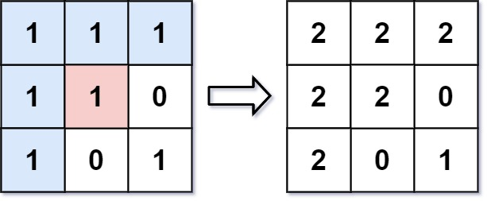
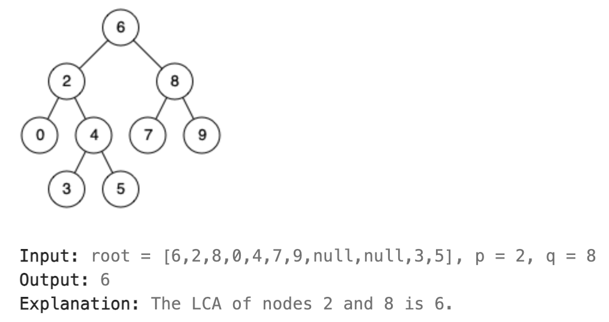
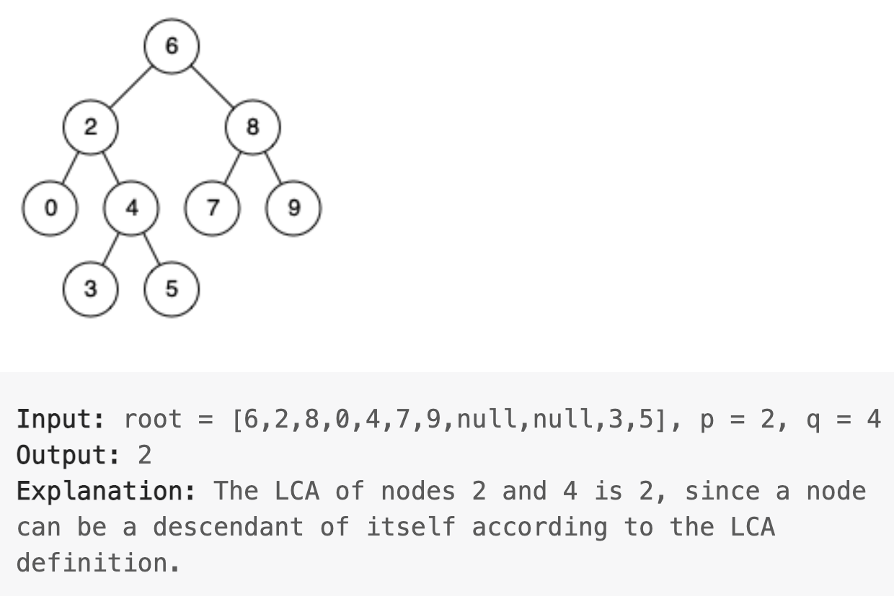
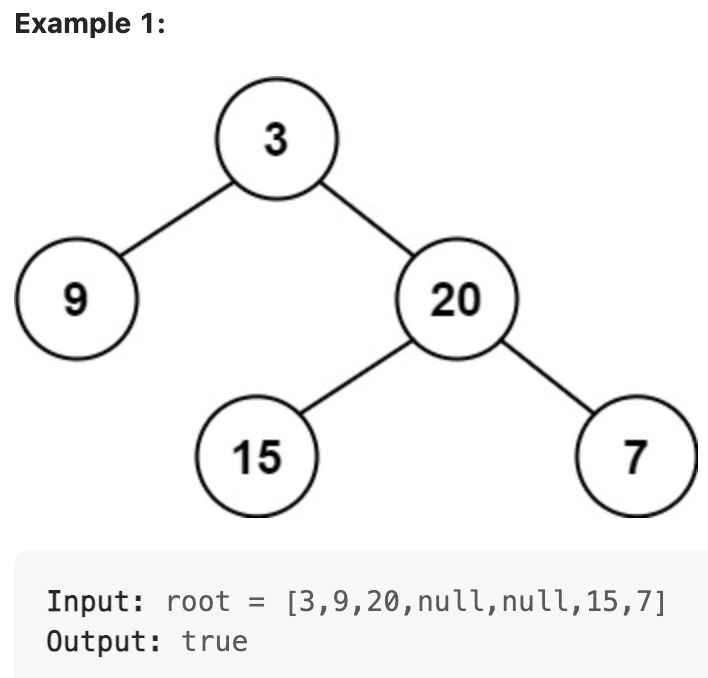
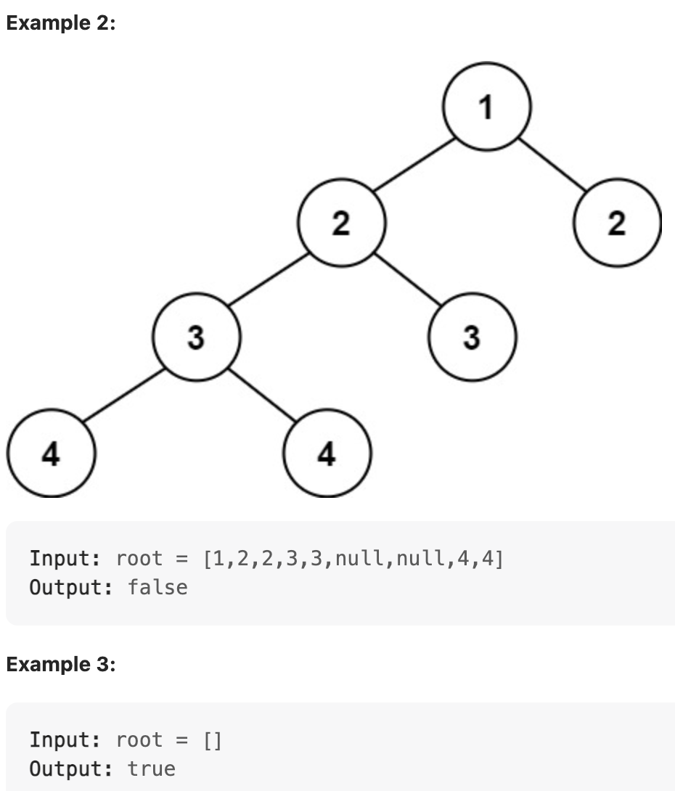
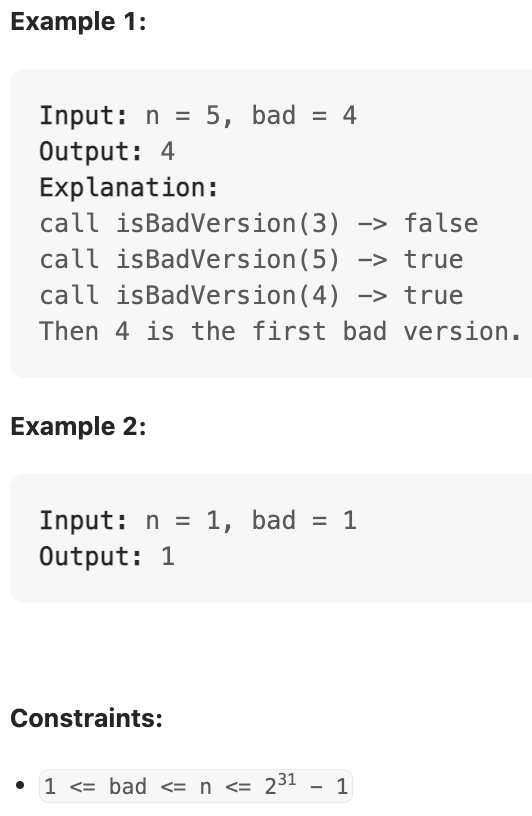

A focused collection of programming problems with a clear prompt, example, approach, Java solution, and complexity analysis. The original Google Docs export remains unchanged while its useful material is migrated here.
Java code theme
Choose the light palette that makes code roles easiest for you to scan. Keywords, types, methods, variables, strings, and numbers use separate colors in every option.
How to use this guide
Try each problem before opening its solution. When reviewing, explain the approach aloud, trace the supplied example, and then implement it without looking.
Read the problem and identify the input, output, and edge cases.
Choose the pattern before coding: hash map, two pointers, binary search, or in-place array update.
State both time and space complexity.
Run the provided example and at least one edge case.
Solved problems
1. Count Substrings Between Two Characters
Problem: Given a string and characters x and y, count every substring that starts with x and ends with y. Matching is case-sensitive.
Example 1
Input:"abxcayc", x = 'a', y = 'c'
Output:3
Example 2
Input:"aabcc", x = 'a', y = 'c'
Output:4
Explanation: The valid substrings are abxc, abxcayc, and ayc.
Approach: Count how many x characters have appeared. On every y, add that count because each earlier x creates one valid start position.
Time: The loop examines each character exactly once and performs only constant-time comparisons and counter updates per character.
Space: The solution stores only the running count, the number of x characters seen, the loop index, and the current character. None grows with the input length.
15. Print duplicateCharsInString
Problem: Print every character that occurs more than once, together with its frequency.
Time: One pass builds the frequency map and another visits at most k distinct entries, which is O(n) overall.
Space: The map holds one counter per distinct character, k; k is at most n.
16. MaxNumRearraged make largest number
Problem: Arrange values to make the largest number.
Example 1
Input:nums = [3, 30, 34, 5, 9]
Output:9534330
Example 2
Input used by the source snippet:["3", "9497", "37"]
Output: characters printed in descending sort order.
Approach in the document: Convert the displayed string array to characters, sort the characters, and print from the end. This preserves the source method. It is a character-sort demonstration, so it does not implement the concatenation comparator required to guarantee Example 1.
Time: Across n rows, n characters are formed and printed per row, yielding n × n output work.
Space: The largest temporary character array/string for a row contains n characters.
19. Binary Search
Problem: Find a target’s index in a sorted integer array, or return -1.
Example 1
Input:nums = [-1, 0, 3, 5, 9, 12], target = 9
Output:4
Example 2
Input:nums = [-1, 0, 3, 5, 9, 12], target = 2
Output:-1
Approach: The document’s iterative binary search compares against the middle and discards one half of the remaining sorted range.
publicintsearch(int[] numbers, int target) {
int start = 0, end = numbers.length - 1;
while (start <= end) {
int middle = start + (end - start) / 2;
if (numbers[middle] == target) return middle;
if (numbers[middle] > target) end = middle - 1;
else start = middle + 1;
}
return -1;
}
TimeO(log n)SpaceO(1)
Time: Each comparison removes roughly half of the remaining candidate range.
Space: The loop maintains only three integer positions and does not allocate input-sized storage.
20. Panagram or not
Problem: Return whether a sentence contains every English lowercase letter.
Example 1
Input:"thequickbrownfoxjumpsoverthelazydog"
Output:true
Example 2
Input:"leetcode"
Output:false
Approach: The source puts each character into a HashSet and tests whether the set has 26 distinct letters.
publicbooleancheckIfPangram(String sentence) {
Set<Character> letters = newHashSet<>();
for (char character : sentence.toCharArray()) letters.add(character);
return letters.size() == 26;
}
TimeO(n)SpaceO(1)
Time: Every character is inspected once for insertion into the set.
Space: For the stated English lowercase alphabet, the set can contain at most 26 entries, a fixed constant.
2. Count Letters in a String
Problem: Count alphabetic characters only. Ignore spaces, punctuation, and digits.
Example 1
Input:"today is thursday, tomorrow is friday"
Output:31
Example 2
Input:"Java 21!"
Output:4
Approach: Visit each character once and count it only when Character.isLetter is true.
publicclassCharacterCount {
publicstaticintcountLetters(Stringtext) {
intcount = 0;
for (intindex = 0; index < text.length(); index++) {
charcharacter = text.charAt(index);
if (Character.isLetter(character)) {
count++;
}
}
returncount;
}
}
TimeO(n)SpaceO(1)
Time: The loop reads every character once and Character.isLetter is a constant-time check for each character.
Space: The implementation uses only a counter, an index, and the current character. It does not build a new string, array, or collection.
3. Two Sum
Problem: Given an integer array and a target, return the indices of two different values whose sum equals the target. Assume exactly one answer exists.
Example 1
Input:[2, 7, 11, 15], target 9
Output:[0, 1]
Example 2
Input:[3, 2, 4], target 6
Output:[1, 2]
Approach: Store each visited value and its index in a hash map. Before inserting the current value, look for its complement.
Time: There is one pass through the array. Hash-map lookup and insertion are O(1) on average, so n iterations produce expected O(n) time.
Space: Before the matching pair is found, the hash map can store one value-to-index entry for every array element, requiring O(n) extra space.
4. Valid Palindrome
Problem: Return whether a string is a palindrome after ignoring non-alphanumeric characters and letter case.
Example 1
Input:"A man, a plan, a canal: Panama"
Output:true
Example 2
Input:"race a car"
Output:false
Approach: Use a pointer at each end. Skip non-alphanumeric characters and compare the remaining characters without regard to case.
publicclassValidPalindrome {
publicstaticbooleanisPalindrome(Stringtext) {
intleft = 0;
intright = text.length() - 1;
while (left < right) {
while (left < right && !Character.isLetterOrDigit(text.charAt(left))) {
left++;
}
while (left < right && !Character.isLetterOrDigit(text.charAt(right))) {
right--;
}
if (Character.toLowerCase(text.charAt(left))
!= Character.toLowerCase(text.charAt(right))) {
returnfalse;
}
left++;
right--;
}
returntrue;
}
}
TimeO(n)SpaceO(1)
Time: The left and right pointers only move toward each other. Together they inspect no more than n characters, including characters skipped as punctuation.
Space: The solution stores only the two indices and temporary character values. It does not create a normalized copy of the string.
5. Binary Search
Problem: Return the index of a target in a sorted integer array, or -1 if the target is absent.
Example 1
Input:[-1, 0, 3, 5, 9, 12], target 9
Output:4
Example 2
Input:[-1, 0, 3, 5, 9, 12], target 2
Output:-1
Approach: Compare the target with the middle value and discard half of the remaining range on each iteration.
publicclassBinarySearch {
publicstaticintsearch(int[] numbers, inttarget) {
intleft = 0;
intright = numbers.length - 1;
while (left <= right) {
intmiddle = left + (right - left) / 2;
if (numbers[middle] == target) {
returnmiddle;
}
if (numbers[middle] < target) {
left = middle + 1;
} else {
right = middle - 1;
}
}
return -1;
}
}
TimeO(log n)SpaceO(1)
Time: Each comparison discards approximately half of the remaining sorted range. Repeated halving needs at most log₂(n) iterations.
Space: The iterative search stores only the left, right, and middle indices; it makes no recursive calls and allocates no data structure.
6. Move Zeroes
Problem: Move all zeroes to the end of an array while preserving the order of the non-zero values.
Example 1
Input:[0, 1, 0, 3, 12]
Output:[1, 3, 12, 0, 0]
Example 2
Input:[0, 0, 1]
Output:[1, 0, 0]
Approach: Write each non-zero value from left to right. Fill the unused positions with zeroes after the scan.
Time: The first loop visits every value once and the second fills at most n positions, for no more than 2n operations. Constants are ignored in Big-O notation, so this is O(n).
Space: Both passes update the original array in place and use only the write index plus the enhanced-for loop variable.
1. Find Number of Characters in String, Only Characters
Problem: Return the number of distinct characters in a string. Characters are compared exactly as written, so uppercase and lowercase letters are different.
Example 1
Input:"programming"
Output:8
Example 2
Input:"aabbcc"
Output:3
Approach: Insert every character into a set. A set retains one copy of each value, so its size is the answer after the scan.
import java.util.HashSet;
import java.util.Set;
publicclassDistinctCharacters {
publicstaticintcountDistinct(Stringtext) {
Set<Character> seen = newHashSet<>();
for (intindex = 0; index < text.length(); index++) {
seen.add(text.charAt(index));
}
returnseen.size();
}
}
TimeO(n)SpaceO(k)
Time: The loop reads each of the n characters once, and each set insertion takes expected O(1) time.
Space: The set stores one entry for each distinct character. If there are k distinct characters, the additional memory is O(k), which is at most O(n).
2. N-Repeated Element in a Size 2N Array
Problem: In an array of size 2N, one element occurs exactly N times and every other element occurs once. Return the repeated element.
Example 1
Input:[1, 2, 3, 3]
Output:3
Example 2
Input:[2, 1, 2, 5, 3, 2]
Output:2
Approach: Insert values into a set as they are scanned. The first value that the set already contains is the required repeated element.
import java.util.HashSet;
import java.util.Set;
publicclassRepeatedElement {
publicstaticintrepeatedNTimes(int[] numbers) {
Set<Integer> seen = newHashSet<>();
for (intnumber : numbers) {
if (!seen.add(number)) {
returnnumber;
}
}
thrownewIllegalArgumentException("Input does not contain a repeated element");
}
}
TimeO(n)SpaceO(n)
Time: Each value is processed once. Set insertion and membership checking through add are expected O(1), giving expected O(n) total time.
Space: Before the duplicate is encountered, the set can contain a linear number of values from the input, so auxiliary space is O(n).
3. Print the Last Four Characters of a String
Problem: Return the last four characters of a string. If the string has four or fewer characters, return the entire string.
Example 1
Input:"leetcode"
Output:"code"
Example 2
Input:"cat"
Output:"cat"
Approach: Calculate the start index as length - 4. The Math.max call keeps that index at zero for short strings.
Time: Creating the character array touches n characters, and the two pointers perform at most n / 2 swaps. Both operations are linear.
Space: The character array contains one slot for every character in the source string, so the new working storage grows linearly with n.
5. Java Program to Reverse Number
Problem: Reverse the decimal digits of a signed 32-bit integer. Return 0 if the reversed value would overflow the signed 32-bit range.
Example 1
Input:123
Output:321
Example 2
Input:-123
Output:-321
Approach: Repeatedly remove the last digit with modulo 10 and append it to the result. Check the result before multiplying by 10 so an overflow is detected without using a wider numeric type.
Time: Each loop removes one decimal digit. For an input with d digits, the loop runs d times, so the general cost is O(d), equivalent to O(log |n|). For the fixed 32-bit input required here, d is bounded by 10, making it O(1).
Space: The solution keeps only the current number, the reversed value, and one digit. It does not create a string, array, or other collection.
6. Java Program to Find Factorial
Problem: Return n!, the product of all positive integers from 1 through n. This version accepts values from 0 through 20, which fit in a Java long.
Example 1
Input:5
Output:120
Example 2
Input:0
Output:1
Approach: Start with 1 and multiply it by every integer from 2 through n. The value for 0! is defined as 1.
publicclassFactorial {
publicstaticlongfactorial(intn) {
if (n < 0 || n > 20) {
thrownewIllegalArgumentException("n must be between 0 and 20");
}
longresult = 1;
for (intvalue = 2; value <= n; value++) {
result *= value;
}
returnresult;
}
}
TimeO(n)SpaceO(1)
Time: The loop performs one multiplication for each integer from 2 through n, which is linear in n.
Space: The method uses a fixed number of numeric variables regardless of n and performs no allocation proportional to the input.
8. To Determine If a String Has All Unique Characters
Problem: Return true when no character occurs more than once in a string; otherwise return false. Matching is case-sensitive.
Example 1
Input:"kite"
Output:true
Example 2
Input:"bubble"
Output:false
Approach: Add each character to a set. If add returns false, that character was already present and the string is not unique.
import java.util.HashSet;
import java.util.Set;
publicclassUniqueCharacters {
publicstaticbooleanhasAllUniqueCharacters(Stringtext) {
Set<Character> seen = newHashSet<>();
for (intindex = 0; index < text.length(); index++) {
if (!seen.add(text.charAt(index))) {
returnfalse;
}
}
returntrue;
}
}
TimeO(n)SpaceO(n)
Time: The scan stops at the first duplicate or processes all n characters. Each set insertion is expected O(1), so total expected time is O(n).
Space: In the all-unique case, the set contains every character in the input, so it can require O(n) additional entries.
9. Fibonacci Series
Problem: Return the first n values of the Fibonacci sequence, starting with 0, 1. This version supports up to 93 values, which fit in Java long.
Example 1
Input:7
Output:[0, 1, 1, 2, 3, 5, 8]
Example 2
Input:1
Output:[0]
Approach: Store each generated term in the result array. Keep the previous two values so the next value can be calculated by addition.
publicclassFibonacciSeries {
publicstaticlong[] firstTerms(intn) {
if (n < 1 || n > 93) {
thrownewIllegalArgumentException("n must be between 1 and 93");
}
long[] terms = newlong[n];
terms[0] = 0;
if (n == 1) {
returnterms;
}
terms[1] = 1;
for (intindex = 2; index < n; index++) {
terms[index] = terms[index - 1] + terms[index - 2];
}
returnterms;
}
}
TimeO(n)SpaceO(n)
Time: After the two initial values, the loop calculates each remaining term once. The number of additions is proportional to n.
Space: The returned array contains n values. Apart from that output array, the method uses only a constant amount of additional memory.
10. Array [0,1] in Sorted Order
Problem: Sort an array containing only 0 and 1 in place, placing every 0 before every 1.
Example 1
Input:[0, 1, 0, 1, 0, 0, 1, 1, 1, 0]
Output:[0, 0, 0, 0, 0, 1, 1, 1, 1, 1]
Example 2
Input:[1, 0, 1, 1, 0]
Output:[0, 0, 1, 1, 1]
Approach: Keep a boundary for the next 0. Scan the array once; when a 0 is found, swap it into that boundary and advance the boundary.
Approach: This keeps the original document’s trial-division approach: for every candidate, test divisors only up to its square root. If no divisor divides it evenly, add it to the result.
Time: For each candidate up to n, the inner loop can test divisors up to √candidate. In the worst case, this gives O(n√n) work.
Space: The returned list stores p prime numbers up to n. Apart from that output, the method uses a fixed number of variables.
11. Sort [0,1,2] Array Elements (Sort Colors)
Problem: Sort an array containing only 0, 1, and 2 in place without using a library sort.
Example 1
Input:[0, 1, 2, 0, 1, 2]
Output:[0, 0, 1, 1, 2, 2]
Example 2
Input:[0, 1, 1, 0, 1, 2, 1, 2, 0, 0, 0, 1]
Output:[0, 0, 0, 0, 0, 1, 1, 1, 1, 1, 2, 2]
Approach: This retains the original three-pointer solution. The left boundary holds the next position for 0, the current pointer scans values, and the right boundary holds the next position for 2.
Time: The current pointer advances for 0s and 1s, while the right boundary moves left for 2s. Each value is handled a constant number of times, so the total work is O(n).
Space: The algorithm rearranges the given array and uses only three indices and one temporary value for swapping.
12. First Unique Character in a String
Problem: Return the index of the first non-repeating character in a string. Return -1 if every character repeats.
Example 1
Input:"leetcode"
Output:0
Example 2
Input:"loveleetcode"
Output:2
Approach 1: The original solution first counts each character in a hash map, then scans the string again to find the first character with count 1.
import java.util.HashMap;
import java.util.Map;
publicclassFirstUniqueCharacter {
publicstaticintfirstUniqChar(Stringtext) {
Map<Character, Integer> frequency = newHashMap<>();
for (charcharacter : text.toCharArray()) {
frequency.put(character, frequency.getOrDefault(character, 0) + 1);
}
for (intindex = 0; index < text.length(); index++) {
if (frequency.get(text.charAt(index)) == 1) {
returnindex;
}
}
return -1;
}
}
TimeO(n)SpaceO(n)
Time: The source approach makes two linear scans of the string; 2n remains O(n).
Space: The hash map can contain one entry for every distinct character, up to O(n) entries.
Approach 2: The document also includes an optimized lowercase-English-letter solution that checks each letter’s first and last index.
Time: It performs a constant 26 iterations, and each indexOf/lastIndexOf call can scan the string, giving O(26n), simplified to O(n).
Space: It stores only two integer variables and one loop character; the alphabet is fixed rather than input-sized.
13. 3Sum
Problem: Return all unique triplets in an integer array whose values sum to 0.
Example 1
Input:[-1, 0, 1, 2, -1, -4]
Output:[[-1, -1, 2], [-1, 0, 1]]
Example 2
Input:[0, 1, 1]
Output:[]
Approach: This keeps the source method: sort the array, fix one position, then use two pointers for the remaining range. A set prevents duplicate triplets in the result.
Time: Sorting costs O(n log n); the outer loop and two-pointer scan together cost O(n²), which dominates.
Space: The set stores m unique output triplets. Apart from the result set and the sorting implementation, the pointer variables use constant space.
14. Valid Palindrome II
Problem: Return true if a string can become a palindrome after deleting at most one character.
Example 1
Input:"aba"
Output:true
Example 2
Input:"abca"
Output:true; delete 'c'.
Approach: This preserves the document’s solution. Move two pointers inward until a mismatch occurs; then test the two permitted deletions by checking either remaining substring for a palindrome.
publicclassValidPalindromeTwo {
publicstaticbooleanvalidPalindrome(Stringtext) {
intleft = 0;
intright = text.length() - 1;
while (left < right) {
if (text.charAt(left) != text.charAt(right)) {
returnisPalindrome(text, left + 1, right)
|| isPalindrome(text, left, right - 1);
}
left++;
right--;
}
returntrue;
}
privatestaticbooleanisPalindrome(Stringtext, intleft, intright) {
while (left < right) {
if (text.charAt(left++) != text.charAt(right--)) {
returnfalse;
}
}
returntrue;
}
}
TimeO(n)SpaceO(1)
Time: The initial scan reaches the first mismatch once. At most two palindrome checks each scan the remaining range, so the total remains O(n).
Space: The method uses indices only and checks substrings by range rather than creating substring objects.
21. Maximum/minimum of an array
Problem: Find an array’s minimum and maximum values.
Example 1
Input:[3, 5, 4, 1, 9]
Output:Minimum element is: 1; Maximum element is: 9
Example 2
Input:[22, 14, 8, 17, 35, 3]
Output:Minimum element is: 3; Maximum element is: 35
Approach 1: The first source method starts both values from the first element, then updates each while scanning the remainder.
publicstaticStringminMax(int[] values) {
if (values == null || values.length < 2) return"Array must have at least two elements";
int minimum = values[0], maximum = values[0];
for (int index = 1; index < values.length; index++) {
if (values[index] < minimum) minimum = values[index];
if (values[index] > maximum) maximum = values[index];
}
return"Min: " + minimum + " & Max: " + maximum;
}
TimeO(n)SpaceO(1)
Time: The method examines each array value once after initialization.
Space: It keeps only two result variables and a loop index.
Approach 2: The document also compares values in pairs before updating the current minimum and maximum.
// Initialize min/max from the first two values, then process remaining pairs.for (int index = 2; index < size - 1; index += 2) {
if (values[index] < values[index + 1]) {
minimum = Math.min(minimum, values[index]);
maximum = Math.max(maximum, values[index + 1]);
} else {
minimum = Math.min(minimum, values[index + 1]);
maximum = Math.max(maximum, values[index]);
}
}
if (size % 2 != 0) {
minimum = Math.min(minimum, values[size - 1]);
maximum = Math.max(maximum, values[size - 1]);
}
TimeO(n)SpaceO(1)
Time: Pairing reduces comparisons but still covers every element, so the growth rate remains O(n).
Space: Pair comparisons reuse the same minimum and maximum variables.
22. Pivot of Sorted Rotated Array
Problem: Find the smallest value (the rotation pivot) in a sorted, rotated array.
Example 1
Input:[30, 40, 50, 10, 20]
Output:10
Example 2
Input:[3, 4, 5, 1, 2]
Output:1
Approach: The source uses binary search: if the middle is smaller than the right end, the pivot is at middle or to its left; otherwise it is to the right.
publicstaticintfindPivot(int[] values) {
int low = 0, high = values.length - 1;
while (low < high) {
int middle = (low + high) / 2;
if (values[middle] < values[high]) high = middle;
else low = middle + 1;
}
return values[high];
}
TimeO(log n)SpaceO(1)
Time: Every iteration halves the interval that can contain the pivot.
Space: It uses only low, high, and middle indices.
23. Running Sum of 1D Array
Problem: Replace every position with the sum of itself and all previous positions.
Example 1
Input:[1, 2, 3, 4]
Output:[1, 3, 6, 10]
Example 2
Input:[1, 1, 1, 1, 1]
Output:[1, 2, 3, 4, 5]
Approach: The source maintains an accumulated sum and writes it back into the same array through a separate output index.
publicstaticint[] runningSum2(int[] numbers) {
int sum = 0, outputIndex = 0;
for (int index = 0; index < numbers.length; index++) {
sum += numbers[index];
numbers[outputIndex++] = sum;
}
return numbers;
}
TimeO(n)SpaceO(1)
Time: There is one constant-time update for each element.
Space: The source modifies the supplied array and uses only two integer counters.
24. Find pivoting Index
Problem: Return the index where the sum strictly to the left equals the sum strictly to the right.
Example 1
Input:[1, 7, 3, 6, 5, 6]
Output:3
Example 2
Input:[1, 2, 3]
Output:-1
Approach: The document first finds the total sum. While scanning, it removes the current value from the right sum, compares it to the left sum, then adds the value to the left sum.
publicintpivotIndex(int[] numbers) {
int total = 0;
for (int number : numbers) total += number;
int leftSum = 0, rightSum = total;
for (int index = 0; index < numbers.length; index++) {
rightSum -= numbers[index];
if (leftSum == rightSum) return index;
leftSum += numbers[index];
}
return -1;
}
TimeO(n)SpaceO(1)
Time: The total-sum pass and pivot-search pass are both linear; 2n is O(n).
Space: It tracks sums and indices without allocating another array or map.
25. Valid Palindrome
Problem: Determine whether text is a palindrome after ignoring non-alphanumeric characters and letter case.
Example 1
Input:"A man, a plan, a canal: Panama"
Output:true
Example 2
Input:"race a car"
Output:false
Approach 1: The source uses two pointers. It skips non-alphanumeric characters and compares the remaining characters case-insensitively.
publicbooleanisPalindrome(String text) {
char[] characters = text.toCharArray();
for (int left = 0, right = characters.length - 1; left < right;) {
if (!Character.isLetterOrDigit(characters[left])) left++;
elseif (!Character.isLetterOrDigit(characters[right])) right--;
elseif (Character.toLowerCase(characters[left++]) != Character.toLowerCase(characters[right--])) returnfalse;
}
returntrue;
}
TimeO(n)SpaceO(n)
Time: Each pointer only moves inward, so every character is inspected at most once.
Space: The source first creates a character array copy of the string, which occupies O(n) space.
Approach 2: The document also includes a simple exact-character comparison for a single scanner token; unlike Approach 1, it does not skip punctuation or normalize case.
boolean palindrome = true;
for (int left = 0, right = input.length() - 1; left <= right; left++, right--) {
if (input.charAt(left) != input.charAt(right)) palindrome = false;
}
System.out.print(palindrome ? "Yes" : "No");
TimeO(n)SpaceO(1)
Time: The loop compares mirrored positions until the pointers meet.
Space: It accesses the existing string directly and stores only flags and indices.
26. 242. Valid Anagram
Problem: Return whether t is an anagram of s.
Example 1
Input:s = "anagram", t = "nagaram"
Output:true
Example 2
Input:s = "rat", t = "car"
Output:false
Approach: The source uses a 26-slot counter: increment for each character in the first word and decrement for the same position in the second.
publicbooleanisAnagram(String first, String second) {
if (first == null || second == null || first.length() != second.length()) returnfalse;
int[] counts = newint[26];
for (int index = 0; index < first.length(); index++) {
counts[first.charAt(index) - 'a']++;
counts[second.charAt(index) - 'a']--;
}
for (int count : counts) if (count != 0) returnfalse;
returntrue;
}
TimeO(n)SpaceO(1)
Time: The two strings are traversed together once; checking 26 counters is constant work.
Space: The counter always has exactly 26 slots for the lowercase-English constraint.
27. Sort Java String using Stream API
Problem: Sort the characters of a string, or sort a list of strings, with Java streams.
Time: Sorting w list elements drives the O(w log w) work, excluding the cost of individual string comparisons.
Space: Collecting produces a new list containing w references.
28. Deserialization in Rest Assured
Concept: Convert a JSON or XML API response into a matching Java object. Serialization is the reverse: Java object to JSON/XML.
Example 1
Input: an application/json response from "/api/endpoint".
Output: a MyResponseObject instance.
Example 2
Request setup: send a JSON request object with content type application/json.
Validation: the source screenshot checks status 200.
Source workflow: Add a supported mapper such as Jackson, GSON, or JAXB; set the JSON content type; then map the received response into a Java class whose fields match the payload. The original document supplied these two snippets as screenshots; they are transcribed below.
Time: Mapping a response requires the JSON/XML parser to read p payload fields/bytes.
Space: The resulting Java object graph represents the parsed payload, so its size grows with p. Network time is separate from this local mapping cost.
29. Flood Fill
Problem: Recolor the starting pixel and all four-directionally connected pixels of the same original color.
Example 1
Input:image = [[1,1,1],[1,1,0],[1,0,1]], sr = 1, sc = 1, color = 2
Output:[[2,2,2],[2,2,0],[2,0,1]]
Example 2
Input:image = [[0,0,0],[0,0,0]], sr = 0, sc = 0, color = 0
Output: unchanged image.

Source visual: connected cells of the original color are recolored.
Approach: The source performs recursive depth-first fill. It first exits if the requested color already matches, preventing an infinite revisit cycle.
publicint[][] floodFill(int[][] image, int startRow, int startColumn, int color) {
if (image[startRow][startColumn] == color) return image;
fill(image, startRow, startColumn, image[startRow][startColumn], color);
return image;
}
privatevoidfill(int[][] image, int row, int column, int originalColor, int newColor) {
if (row < 0 || row >= image.length || column < 0 || column >= image[0].length || image[row][column] != originalColor) return;
image[row][column] = newColor;
fill(image, row + 1, column, originalColor, newColor);
fill(image, row - 1, column, originalColor, newColor);
fill(image, row, column + 1, originalColor, newColor);
fill(image, row, column - 1, originalColor, newColor);
}
TimeO(m × n)SpaceO(m × n)
Time: In the largest connected region, each of the m × n pixels is recolored and visited once.
Space: The recursive call stack can grow to the size of that region in the worst case.
30. 235. Lowest Common Ancestor of a Binary Search Tree
Problem: Find the lowest node in a BST that has both specified nodes in its subtree.
Example 1
Input: BST [6,2,8,0,4,7,9,null,null,3,5], p = 2, q = 8.
Output:6
Example 2
Input: same BST, p = 2, q = 4.
Output:2

Source visual: nodes 2 and 8 meet at 6.

Source visual: a node may be its own ancestor.
Approach: The document follows BST ordering: recurse left if both values are smaller, right if both are larger, otherwise the current root separates them and is the answer.
Time: The algorithm chooses only one child per level and therefore follows one root-to-node path of height h.
Space: Recursive calls occupy up to h stack frames; h is O(log n) for a balanced BST and O(n) when skewed.
31. 110. Balanced Binary Tree
Problem: Return whether the height of every node’s left and right subtrees differs by no more than one.
Example 1
Input:[3,9,20,null,null,15,7]
Output:true
Example 2
Input:[1,2,2,3,3,null,null,4,4]
Output:false

Source visual: balanced tree.

Source visual: unbalanced tree.
Approach 1: The source height-first DFS returns -1 immediately for an unbalanced subtree; otherwise it returns its height.
publicbooleanisBalanced(TreeNode root) {
returndfsHeight(root) != -1;
}
intdfsHeight(TreeNode root) {
if (root == null) return0;
int leftHeight = dfsHeight(root.left);
if (leftHeight == -1) return -1;
int rightHeight = dfsHeight(root.right);
if (rightHeight == -1 || Math.abs(leftHeight - rightHeight) > 1) return -1;
returnMath.max(leftHeight, rightHeight) + 1;
}
TimeO(n)SpaceO(h)
Time: Each tree node’s height is computed once; an unbalanced branch can return early.
Space: DFS recursion keeps at most one root-to-leaf path, whose length is h.
Approach 2: The document also gives the same sentinel-height idea as a separate Height helper.
publicbooleanisBalanced(TreeNode root) {
if (root == null) returntrue;
returnHeight(root) != -1;
}
publicintHeight(TreeNode root) {
if (root == null) return0;
int leftHeight = Height(root.left);
int rightHeight = Height(root.right);
if (leftHeight == -1 || rightHeight == -1 || Math.abs(leftHeight - rightHeight) > 1) return -1;
returnMath.max(leftHeight, rightHeight) + 1;
}
TimeO(n)SpaceO(h)
Time: It makes one height computation per node rather than repeatedly recomputing subtree heights.
Space: Its only input-dependent auxiliary memory is the recursion path of height h.
32. First Bad Version
Problem: Find the first failing version when every version after it also fails.
Example 1
Input:n = 5, first bad version 4.
Output:4
Example 2
Input:n = 1, first bad version 1.
Output:1

Source visual: successive version checks identify the first bad version.
Approach: The source uses binary search. On a bad middle version, it retains the lower half; on a good one, it retains the upper half. The final start is the first bad version.
publicclassSolutionextendsVersionControl {
publicintfirstBadVersion(int versions) {
int start = 1, end = versions;
while (start <= end) {
int middle = start + (end - start) / 2;
if (isBadVersion(middle)) end = middle - 1;
else start = middle + 1;
}
return start;
}
}
TimeO(log n)SpaceO(1)
Time: Each call to isBadVersion halves the remaining version interval.
Space: The iterative search stores only start, end, and middle.
33. Ransom Note
Problem: Return whether every letter of ransomNote can be supplied by magazine at most once.
Example 1
Input:ransomNote = "a", magazine = "b"
Output:false
Example 2
Input:ransomNote = "aa", magazine = "aab"
Output:true
Approach: The source counts available magazine letters, then decrements the matching counter for each ransom-note letter. A negative count means a required letter is unavailable.
publicbooleancanConstruct(String ransomNote, String magazine) {
int[] counts = newint[26];
for (char character : magazine.toCharArray()) ++counts[character - 'a'];
for (char character : ransomNote.toCharArray()) {
if (--counts[character - 'a'] < 0) returnfalse;
}
returntrue;
}
TimeO(m + r)SpaceO(1)
Time: It scans all m magazine characters and all r ransom-note characters once.
Space: The 26-counter array is fixed-size for lowercase English letters.
Time: It performs a constant number of checks for each value.
Space: The returned list stores n strings.
36. Longest Substring with At Least K Repeating Characters
Problem: Find the longest substring in which every character occurs at least k times.
Example 1
Input:s = "aaabb", k = 3
Output:3
Example 2
Input:s = "ababbc", k = 2
Output:5
Approach: The source counts the current string. Any character occurring fewer than k times cannot belong to a valid answer, so the solution splits around it and solves the pieces recursively.
publicintlongestSubstring(String text, int k) {
if (text.length() < k) return0;
int[] counts = newint[26];
for (int index = 0; index < text.length(); index++) counts[text.charAt(index) - 'a']++;
for (int index = 0; index < text.length(); index++) {
if (counts[text.charAt(index) - 'a'] >= k) continue;
int next = index + 1;
while (next < text.length() && counts[text.charAt(next) - 'a'] < k) next++;
returnMath.max(longestSubstring(text.substring(0, index), k), longestSubstring(text.substring(next), k));
}
return text.length();
}
TimeO(n²)SpaceO(n)
Time: Repeated splitting and substring creation can rescan characters across recursive calls, giving O(n²) in the worst case.
Space: Recursive calls and substring objects can retain O(n) data along a call path.
37. Kth Smallest Element in a Sorted Matrix
Problem: Find the kth smallest value in a matrix whose rows and columns are sorted.
Example 1
Input:[[1,5,9],[10,11,13],[12,13,15]], k = 8
Output:13
Example 2
Input:[[-5]], k = 1
Output:-5
Approach: The source binary-searches the value range. For each candidate value, it counts entries no larger than it by walking from the top-right corner.
publicintkthSmallest(int[][] matrix, int k) {
int low = matrix[0][0], high = matrix[matrix.length - 1][matrix[0].length - 1] + 1;
while (low < high) {
int middle = low + (high - low) / 2, count = 0, column = matrix[0].length - 1;
for (int row = 0; row < matrix.length; row++) { while (column >= 0 && matrix[row][column] > middle) column--; count += column + 1; }
if (count < k) low = middle + 1; else high = middle;
}
return low;
}
TimeO(n log R)SpaceO(1)
Time: Each value-range search step counts in O(n) for an n × n matrix, and there are O(log R) candidate values in range R.
Space: It keeps only scalar bounds, counters, and indices.
38. Sum of Two Integers without + and -
Problem: Return the sum of two integers without using the addition or subtraction operators.
Example 1
Input:a = 1, b = 2
Output:3
Example 2
Input:a = -2, b = 3
Output:1
Approach: The source uses XOR for the sum without carry, AND for carry bits, then shifts the carry left until no carry remains.
publicintgetSum(int first, int second) {
while (second != 0) {
int carry = first & second;
first = first ^ second;
second = carry << 1;
}
return first;
}
TimeO(w)SpaceO(1)
Time: Carry bits may propagate through w bit positions. For Java’s fixed 32-bit integers this is O(1).
Space: It stores only the current operands and carry.
39. Subtract Two Integers without + and -
Problem: Return a - b without addition or subtraction operators.
Example 1
Input:a = 5, b = 3
Output:2
Example 2
Input:a = 3, b = 5
Output:-2
Approach: The document mirrors bit addition: XOR gives the difference without a borrow, while (~a) & b finds borrow bits to shift left.
publicintgetSubtract(int first, int second) {
while (second != 0) {
int borrow = (~first) & second;
first = first ^ second;
second = borrow << 1;
}
return first;
}
TimeO(w)SpaceO(1)
Time: Borrow propagation can move through w bits; for a fixed-width Java integer, that is bounded by a constant.
Space: The loop uses only one additional integer, borrow.
40. Reverse a String Preserving the Order of Spaces
Problem: Reverse non-space characters while leaving each space at its original position.
Example 1
Input:"My name is Ram"
Output:"ma Rsie ma nyM"
Example 2
Input:"a b"
Output:"b a"
Approach: The source keeps two pointers. When either pointer reaches a space it skips it; otherwise it swaps the two characters.
publicstaticvoidreverseString(String text) {
char[] result = text.toCharArray();
int start = 0, end = result.length - 1;
while (start < end) {
if (result[start] == ' ') { start++; continue; }
if (result[end] == ' ') { end--; continue; }
char temporary = result[start]; result[start++] = result[end]; result[end--] = temporary;
}
System.out.println(String.valueOf(result));
}
TimeO(n)SpaceO(n)
Time: Each pointer moves inward over each position at most once.
Space: The source creates a character array copy of the input string.
Sorting algorithms
These comparison sorts are useful for interviews because they demonstrate loops, invariants, and in-place array operations. In production Java, prefer Arrays.sort unless the exercise requires an implementation.
Algorithm
Best
Average / Worst
Extra Space
Use case
Bubble sort
O(n)
O(n²)
O(1)
Learning; very small inputs
Selection sort
O(n²)
O(n²)
O(1)
When minimizing swaps matters
Insertion sort
O(n)
O(n²)
O(1)
Small or nearly sorted inputs
Practice backlog
These problems were identified in the legacy notes but do not yet have a reviewed solution in this guide. They are intentionally kept separate from solved material.
Strings
Largest palindromic substring
String compression
Duplicate character detection
Reverse a string without moving special characters